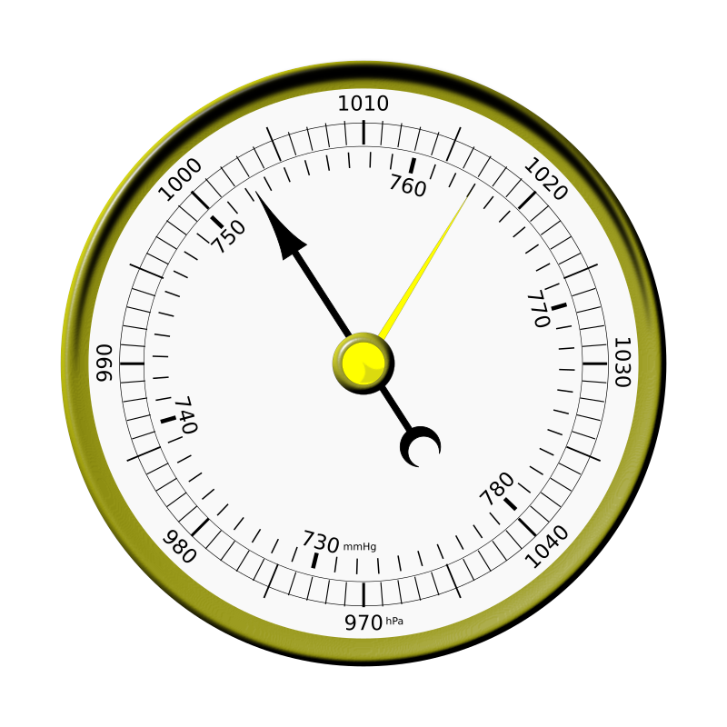

Diccionario
Pronóstico
- Definición
-
Es hacer una predicción, es decir, un anuncio de algo que está por suceder (normalmente basado en la información disponible).
- Ejemplo
-
El pronóstico del tiempo da lluvia mañana.

Ya has visto una muestra de hasta dónde puede llegar ese Internet de las Cosas del que te valdrás para poder tener siempre actualizados en tiempo real los valores de la estación meteorológica inteligente de tu Centro.
Pero antes de eso ¿qué tal si refrescas un poco la memoria y repasas algunas cosas que te serán de ayuda a lo largo de tu andadura?
Tranquilo, que lo vas a hacer en colaboración con tus colegas de clase para que no suponga tanto esfuerzo y, a la vez, te asegures de que no se olvida nada, ya que cada cual aportará algo hasta completarlo todo.
Vas a empezar por recordar qué sabes de las predicciones meteorológicas, esas que salen por la tele diariamente, por ejemplo.
Por otro lado, también debes pensar sobre cómo te conectas a Internet en tu casa o incluso fuera de ella.
Finalmente necesitas acordarte de Micro:bit y de su programación básica porque va a ser la microcontroladora que utilizarás para conseguir superar este reto.
Espero que se te dé bien, y si no, como diría Motus, tampoco pasa nada, por algo estamos empezando.
Entre toda la clase vais a tratar de contestar a las siguientes preguntas referentes a algunas de las variables principales que influyen en el tiempo atmosférico y que se representan en la secuencia de imágenes que encontrarás más abajo.



Puede que no te acuerdes todo lo bien que querrías o incluso que no tengas ni idea de algunas de las preguntas.
En cualquiera de los casos, te puedo ayudar dándote un enlace a un recurso que te puede venir muy bien.
En pareja, abrid el navegador de vuestro equipo y buscad en Internet el acceso al espacio televisivo dedicado al pronóstico del tiempo.
Podéis utilizar como criterio de búsqueda "el tiempo" seguido del canal donde queréis localizarlo, Canal Sur o RTVE, por ejemplo.
Seguidamente, tenéis que ver la predicción que hacen para cualquiera de los días que hayáis podido encontrar y fijaros muy bien en el uso que hacen de los datos que pueden captar las estaciones meteorológicas.
Cread un documento, utilizando un procesador de texto, en el que expliquéis la relación entre cada variable medida en una estación meteorológica y el mapa de predicción donde se usa, acompañándola de una captura de pantalla con dicho mapa.
Es hacer una predicción, es decir, un anuncio de algo que está por suceder (normalmente basado en la información disponible).
El pronóstico del tiempo da lluvia mañana.
Conoce la guía para la competencia digital donde encontrarás una ayuda para aprender a utilizar un procesador de textos. Es una herramienta que te ayudará a poder realizar este ejercicio.
Para hacer esta actividad vais trabajar en pareja.
Seguramente podríais afirmar que vivís conectados a Internet, pero ¿y si os pido explicar cómo os conectáis?
Mirad los siguientes dispositivos y redactar en vuestro cuaderno una descripción de cómo los conectáis a Internet.
Aportad todos los detalles que os sea posible, incluso los pasos que dais para hacerlo.


Es probable que te acuerdes cómo se programa Micro:bit, e incluso que tenía integrado un sensor de temperatura.
Pues bien, es el momento de que refresques ese recuerdo.
Continúa colaborando con tu pareja para programar en MakeCode la placa Micro:bit de forma que represente en su matriz de leds la temperatura que detecte cada minuto.
Para acabar, es interesante que pongáis en común vuestras ideas y experiencias y toméis nota de todo aquello que consideréis de interés.
Conoce la guía para la competencia de aprender a aprender donde encontrarás una ayuda para tomar notas. Es una herramienta que te ayudará a poder realizar este ejercicio. Aquí tienes el enlace al apartado de la guía "Hago mis anotaciones".
¿Crees que todo va bien hasta ahora?
Cuando te enfrentas a una actividad en la que pones en común tu labor tras la realización de una serie de ejercicios, es un buen momento para hacerse esta pregunta y reflexionar acerca de tus propias emociones.
¿Has sufrido algún momento fracaso, tensión, vergüenza, miedo a lo desconocido, inseguridad...? o, por el contrario ¿has sentido éxito, orgullo, tranquilidad, ilusión, alegría...? o quizás una mezcla de todo.
Y lo más importante ¿Has sido capaz de controlar todas tus emociones y expresarlas de manera adecuada en cada caso?
Tanto las buenas como las malas emociones que sientas en cada momento ayudan a que te desarrolles como persona, solo hay que saber canalizarlas adecuadamente. Piensa, por ejemplo, que en los buenos momentos puedes ser un referente evitando caer en la prepotencia y en los malos debes dejarte ayudar para superar la desesperación y el malestar.
Solo el control de la forma en la que expresas tus emociones evita causar más daño que beneficio y esto es especialmente importante en tareas como esta en la que interactúas con toda la clase.
Una vez que has concluido las actividades y ejercicios de este apartado, sería bueno que reflexionaras un poco sobre lo que has hecho. De esta forma podrás identificar cuáles han sido las habilidades que has utilizado y las limitaciones que has tenido. Esto te ayudará a conocerte mejor y además es una buena estrategia para saber enfrentarse a lo que está por llegar:
A veces necesitas actividades como esta de reflexión para que te des cuenta de todo lo que has avanzado hasta el momento gracias al trabajo que has hecho completando los ejercicios y actividades hasta el momento.
Seguro que cuando te has planteado todas estas cuestiones habrás comprobado que sabías más de lo que pensabas inicialmente.
Ten presente que tu aprendizaje futuro está conectado con el que ya has completado y este se apoya en todo el trabajo que realizas cuando vas haciendo actividades y ejercicios. En cada uno de ellos debes reconocer cuál es su esencia, es decir, qué es lo importante de esa labor: qué trabaja, a qué se refiere, cómo lo hace...
Cuando seas consciente de todo esto verás que le encuentras mucho más sentido a lo que haces y que además te guía hacia el objetivo de aprender nuevos conocimientos de gran utilidad.
Obra publicada con Licencia Creative Commons Reconocimiento No comercial Compartir igual 4.0